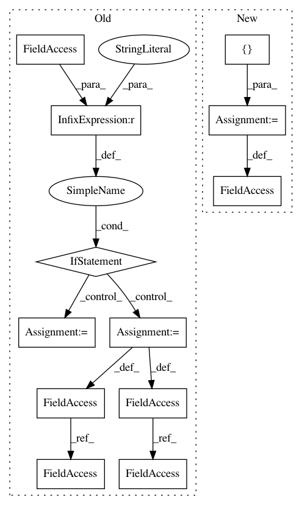

b2074ddf9d8bc2069d66976fea58a52f40238496,pretrainedmodels/nasnet.py,,,#,448
Before Change
return x
if __name__ == "__main__":
model = NasNetLarge()
input = Variable(torch.randn(2,3,331,331))
output = model(input)
print(output.size())
After Change
import torch.nn.functional as F
from torch.autograd import Variable
pretrained_settings = {
"nasnetalarge": {
"imagenet": {
"url": "http://webia.lip6.fr/~cadene/Downloads/nasnetalarge-431029df.pth",
"input_space": "RGB",
"input_size": [3, 331, 331],
"input_range": [0, 1],
"mean": [0.5, 0.5, 0.5],
"std": [0.5, 0.5, 0.5],
"num_classes": 1000
},
"imagenet+background": {
"url": "http://webia.lip6.fr/~cadene/Downloads/nasnetalarge-431029df.pth",
"input_space": "RGB",
"input_size": [3, 331, 331],
"input_range": [0, 1],
"mean": [0.5, 0.5, 0.5],
"std": [0.5, 0.5, 0.5],
"num_classes": 1001
}
}
}
class MaxPoolPad(nn.Module):
def __init__(self):
In pattern: SUPERPATTERN
Frequency: 3
Non-data size: 12
Instances
Project Name: Cadene/pretrained-models.pytorch
Commit Name: b2074ddf9d8bc2069d66976fea58a52f40238496
Time: 2017-11-16
Author: remi.cadene@icloud.com
File Name: pretrainedmodels/nasnet.py
Class Name:
Method Name:
Project Name: biolab/orange3
Commit Name: 7fee1dae63fabcfa6c90cc1deecdd337083c7692
Time: 2015-01-30
Author: anze.staric@gmail.com
File Name: Orange/classification/softmax_regression.py
Class Name:
Method Name:
Project Name: akkana/scripts
Commit Name: a6d4d9cd2634bade3bb99ddbc77b9bd63d151cdb
Time: 2020-07-23
Author: akkana@shallowsky.com
File Name: starstack.py
Class Name:
Method Name: